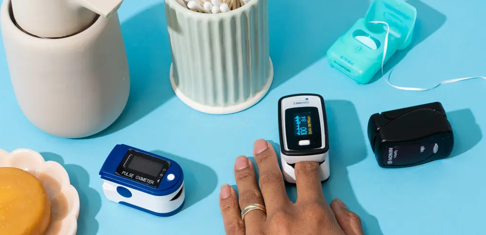
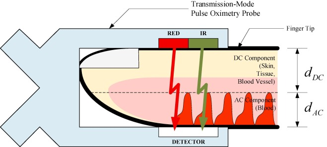
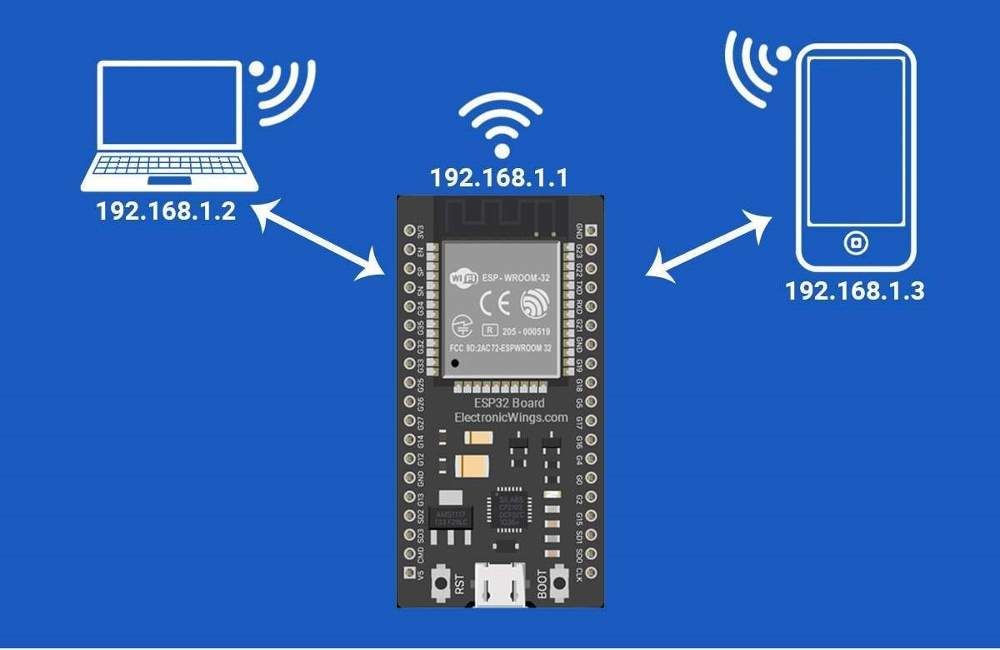

Learn to Build and Utilize Your Own Pulse Oximeter
Introduction
Pulse oximeters are non-invasive medical devices widely used to measure the oxygen saturation level (SpO₂) of a patient's blood, providing critical information about respiratory and cardiovascular health. This article guides you in making your own Arduino-based pulse oximeter. Although it would be much easier and more efficient to purchase one from an online retailer or your nearest medical store, building a pulse oximeter by yourself marks a great learning experience. This article also tells you about the functioning and significance of these devices along with an introduction to the use of Arduino and its relevance in teaching students and enthusiasts about electronics. This article will guide you to use a web-based interface to display the readings from your pulse oximeter, and finally, an overview of other projects related to the biomedical field that can be created. Please note that this website is only for educational purposes.

Why Build Your Own Pulse Oximeter?
Naturally this question was supposed to arise as to why even consider making a pulse oximeter in the first place. The answer to that question is simple; by creating this project you get a chance to learn about biology, electronics and programming at the same time. It doesn’t necessarily matter which age group you belong to but if you are a high school student right now this article might be helpful to you for a school project. You might be looking for a fun little electronics project or you are simply here as an enthusiast. Regardless of the purpose by the end of this article, you’ll have a pulse oximeter at your home if you correctly follow the given instructions.
Another neat reason to create this project is that this project is a great first step towards learning about robotics in the future. Yes, you read that correctly! An Arduino is still an integral part of major robotics projects. Arduino can be used in robotics projects for tasks like controlling motors, sensors, and actuators. It helps build robots that can move, sense the environment, avoid obstacles, follow lines, or even interact with users.
But I know some of you might be scratching your head right now and asking what exactly an Arduino is. The answer to that lies in the next section.
Arduino- An overview
Arduino is an open-source electronics platform that combines easy-to-use hardware and software, designed for people of all skill levels. At its core, Arduino boards are small, programmable microcontrollers that can control and interact with various electronic components like sensors, motors, and LEDs. Users write code in the Arduino IDE (Integrated Development Environment) to create projects ranging from simple gadgets to complex systems. Arduino is popular for DIY electronics, robotics, and automation projects because it’s beginner-friendly, affordable, and well-supported by a large community.
Building the DIY Pulse Oximeter: A Step-by-Step Guide
Whether you’re a beginner or an experienced maker, this guide will walk you through every stage, from gathering materials to assembling the components and coding the device.
To get started on building your pulse oximeter, click on the button below for the full step-by-step guide. You’ll find clear instructions, wiring diagrams, and the necessary code to make your project a success. This tutorial is designed to help you not only follow along but also explore advanced customizations for a more personalized device.
How to Use the DIY Pulse Oximeter on Our Website
Now that you have created your pulse oximeter you can make use of the button given below to open the page on which you can get the real-time readings from your connected pulse oximeter.
Make sure you have the necessary drivers installed on your system and make sure you have uploaded the correct code to your Arduino.
Once you connect the USB and open the webpage, you’ll press the “Connect to Pulse Oximeter” button and you’ll be prompted to select the Port. Select the relevant port and the readings should be visible on the webpage.
You can also find the code to create the real-time SpO2 monitoring webpage here.
Note: Works only on select browsers that support serial port monitoring (Brave, Chrome, Microsoft Edge). If you still face any problem on the web interface you can always use the Arduino IDE serial port monitor to get the real-time readings.
Understanding the Pulse Oximeter Readings
Oxygen Saturation (SpO₂): SpO₂ is the percentage of haemoglobin molecules in the blood that are saturated with oxygen. The normal range for SpO₂ levels is typically from 95% to 100% in healthy individuals (Hess, 2016).
Haemoglobin and Light Absorption: Haemoglobin, the protein in red blood cells responsible for oxygen transport, has different light absorption characteristics depending on whether it is oxygenated (oxyhaemoglobin) or deoxygenated (deoxyhaemoglobin). Pulse oximeters exploit these differences to determine SpO₂ (Sun & Thakor, 2016).
Working of a Pulse Oximeter
The working of a standard pulse oximeter can be understood from its components. It consists of three main parts:
Light Emitters: Typically, two light-emitting diodes (LEDs) emit light at specific wavelengths—commonly red (around 660 nm) and infrared (around 940 nm). These wavelengths are chosen because of their differential absorption by oxyhemoglobin and deoxyhemoglobin (Tamura, 2019).
Photodetector: Positioned adjacent to the emitters, the photodetector captures the light that passes through or is reflected by the blood vessels in the tissue (commonly the fingertip, earlobe, or other peripheral sites) (Tamura, 2019).
Microprocessor: This component analyzes the detected light signals, processes the data, and calculates the SpO₂ value, which is then displayed to the user.

Clinical Significance
Newborn Screening for CCHD: Pulse oximetry has been suggested as a newborn screening method for identifying critical congenital heart disease (CCHD), which refers to heart defects that necessitate surgery or catheter-based intervention within the first year of life. Since many newborns with CCHD experience some level of hypoxemia early on, pulse oximetry is recommended as a screening tool to detect neonatal CCHD before hospital discharge, even before symptoms appear (Nitzan et al., 2014).
COVID-19 Pandemic: The COVID-19 pandemic highlighted the importance of remote health monitoring tools, with pulse oximeters emerging as vital devices for both patients and healthcare providers. COVID-19 can cause significant respiratory issues, including hypoxemia (low blood oxygen levels), which may not always present with noticeable symptoms. Pulse oximeters enable early detection of declining oxygen saturation, allowing for timely medical intervention (Bickler et al., 2021; Luks & Swenson, 2020).
Chronic Obstructive Pulmonary Disease (COPD): COPD is a progressive lung disease that impairs breathing. Regular tracking of oxygen saturation helps manage the chronic nature of COPD, ensuring that patients maintain adequate oxygen levels throughout daily activities (Schermer et al., 2009).
Possible Improvements in the DIY Pulse Oximeter
Use of a microcontroller station like ESP32 to get real-time readings wirelessly.
Making use of modern sensors other than MAX30100.
Create a mobile app that connects wirelessly to your Arduino.
Mounting it on a PCB and making it more compact.

More Biomedical Arduino Projects
Temperature and Humidity Monitor: Create a system that monitors body temperature and environmental humidity using temperature sensors and displays the data on a screen.
Glucometer: Design a basic glucose meter that utilizes specific sensors to measure blood glucose levels, providing results through a display.
Respiration Rate Monitor: Construct a device that measures respiratory rates using a pressure sensor or microphone to detect breath patterns.
Smart Pill Dispenser: Develop an automated pill dispenser that reminds users when to take medication, integrating with a microcontroller and sensors.
Ambient Light Sensor for Patients: Create a system that monitors light levels in patient rooms to ensure optimal lighting conditions for recovery.
Wearable Health Tracker: Design a wearable device that tracks various health metrics (like steps, heart rate, etc.) and syncs data to a mobile app.
Conclusion
Thank you for exploring our DIY Pulse Oximeter project! We hope this guide has inspired you to delve deeper into the world of biomedical engineering and Arduino projects. Whether you're a beginner or an experienced maker, creating your own pulse oximeter can be a rewarding experience that enhances your understanding of health monitoring technology. We encourage you to experiment, modify, and share your own findings as you embark on this journey. Your feedback and experiences are invaluable to us, so please feel free to reach out with any questions or insights. Together, let’s innovate and improve our understanding of health technology!
Your Feedback Matters!
We would love to hear your thoughts about our DIY Pulse Oximeter project. Please share your feedback below:
A V J Challoner, & C A Ramsay. (1974). A photoelectric plethysmograph for the measurement of cutaneous blood flow. Physics in Medicine & Biology, 19(3), 317–328. https://doi.org/10.1088/0031-9155/19/3/003
Basaranoglu, G., Bakan, M., Umutoglu, T., Zengin, S. U., Idin, K., & Salihoglu, Z. (2015). Comparison of SpO2 values from different fingers of the hands. SpringerPlus, 4(1). https://doi.org/10.1186/s40064-015-1360-5
Bickler, P. E., Feiner, J. R., Lipnick, M. S., & McKleroy, W. (2021). “Silent” Presentation of Hypoxemia and Cardiorespiratory Compensation in COVID-19. In Anesthesiology (Vol. 134, Issue 2, pp. 262–269). Lippincott Williams and Wilkins. https://doi.org/10.1097/ALN.0000000000003578
Hakverdioǧlu Yönt, G., Akin Korhan, E., & Dizer, B. (2014). The effect of nail polish on pulse oximetry readings. Intensive and Critical Care Nursing, 30(2), 111–115. https://doi.org/10.1016/j.iccn.2013.08.003
John, A., Nundy, K. K., Cardiff, B., & John, D. (2021). SomnNET: An SpO2 Based Deep Learning Network for Sleep Apnea Detection in Smartwatches. Proceedings of the Annual International Conference of the IEEE Engineering in Medicine and Biology Society, EMBS, 2021-January, 1961–1964. https://doi.org/10.1109/EMBC46164.2021.9631037
Luks, A. M., & Swenson, E. R. (2020). Pulse oximetry for monitoring patients with COVID-19 at home potential pitfalls and practical guidance. In Annals of the American Thoracic Society (Vol. 17, Issue 9, pp. 1040–1046). American Thoracic Society. https://doi.org/10.1513/AnnalsATS.202005-418FR
Nitzan, M., Romem, A., & Koppel, R. (2014). Pulse oximetry: Fundamentals and technology update. In Medical Devices: Evidence and Research (Vol. 7, Issue 1, pp. 231–239). Dove Medical Press Ltd. https://doi.org/10.2147/MDER.S47319
Schermer, T., Leenders, J., in’t veen, H., van den Bosch, W., Wissink, A., Smeele, I., & Chavannes, N. (2009). Pulse oximetry in family practice: Indications and clinical observations in patients with COPD. Family Practice, 26(6), 524–531. https://doi.org/10.1093/fampra/cmp063
Sun, Y., & Thakor, N. (2016). Photoplethysmography Revisited: From Contact to Noncontact, from Point to Imaging. In IEEE Transactions on Biomedical Engineering (Vol. 63, Issue 3, pp. 463–477). IEEE Computer Society. https://doi.org/10.1109/TBME.2015.2476337
Tamura, T. (2019). Current progress of photoplethysmography and SPO2 for health monitoring. In Biomedical Engineering Letters (Vol. 9, Issue 1, pp. 21–36). Springer Verlag. https://doi.org/10.1007/s13534-019-00097-w